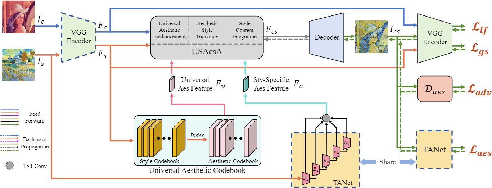
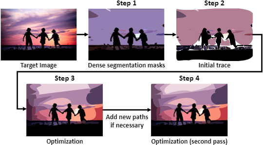
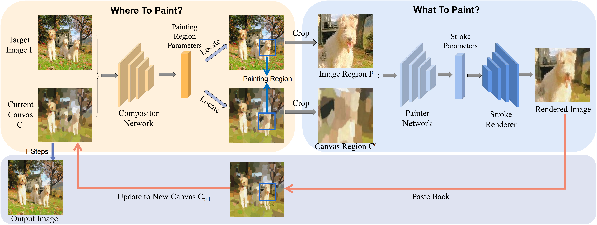
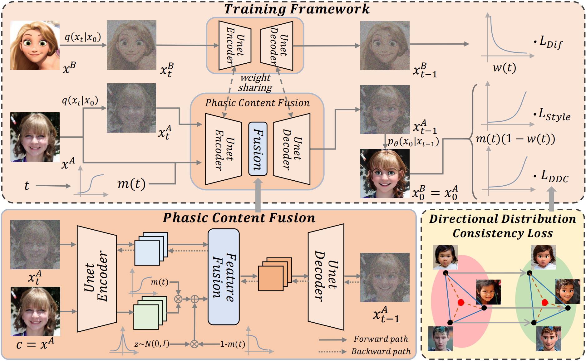

|
Haokun Zhu
Hi! I am a senior student from Shanghai Jiao Tong University (SJTU).
Currently, I'm working with Ph.D. Teng Hu as an undergraduate researcher at SJTU, supervised by Prof. Ran Yi.
My research interests mainly lie in Computer Vision and Generative Models.
Email /
Resume /
Google Scholar /
Github /
|
|
|
Research
I am currently an undergraduate researcher in Digital Media & Computer Vision Laboratory(DMCV) at SJTU advised by Prof. Ran Yi.
I'm interested in deep generative models like GANs and Diffusion Models. My dream is to develop generative models with strong capabilities and employ them in order to bring benefits to the every-day life of everyone.
In my past one year of research experience, I have explored a wide range of directions, including:
Few-shot Image Generation with Diffusion Model:
how to employ diffusion model in producing high-quality and diverse images in a new domain with only a small number of training data.
Aesthetic Guided Universal Style Transfer:
how to transfer the style of an arbitrary image to another content image while striking a balance among aesthetic qualities, style transfromation and content presevation.
Stroke-based Neural Painting:
how to recreate a pixel-based image with a set of brushstrokes like real human-beings while achieving both faithful reconstruction and stroke style at the same time.
Image Vectorization:
how to transform raster images into scalable vector graphics which have superior adaptability and detailed representation.
|
Publications & Preprints (* means equal contribution)
|

|
AesStyler: Aesthetic Guided Universal Style Transfer
Haokun Zhu*,
Ran Yi,
Teng Hu,
Yu-Kun Lai,
Paul L. Rosin
Submitted to CVPR 2024, Under Review
[pdf]
we propose AesStyler, a novel Aesthetic Guided Universal Style Transfer method, which utilizes pre-trained aesthetiic assessment model, a novel Universal Aesthetic Codebook and a novel Universal and Specific Aesthetic-Guided Attention (USAesA) module. Extensive experiments and user-studies have demonstrated that our approach generates aesthetically more harmonious and pleasing results than the state-of-the-art methods.
|
|

|
SAMVG: A Multi-stage Image Vectorization Model with the Segment-Anything Model
Haokun Zhu*,
Juang Ian Chong*,
Teng Hu,
Ran Yi,
Yu-Kun Lai,
Paul L. Rosin
Submitted to ICASSP 2024, Under Review
[arXiv]
In this paper, we propose SAMVG, a multi-stage model to vectorize raster images into SVG (Scalable Vector Graphics). Through a series of extensive experiments, we demonstrate that SAMVG can produce high quality SVGs in any domain while requiring less computation time and complexity compared to previous state-of-the-art methods.
|
|

|
Stroke-based Neural Painting and Stylization with Dynamically Predicted Painting Region
Teng Hu,
Ran Yi,
Haokun Zhu,
Liang Liu,
Jinlong Peng,
Yabiao Wang,
Chengjie Wang
Lizhuang Ma
Accepted by ACM MM 2023
[pdf] [code] [arXiv]
we propose Compositional Neural Painter, a novel stroke-based rendering framework which dynamically predicts the next painting region based on the current canvas, instead of dividing the image plane uniformly into painting regions. Extensive experiments show our model outperforms the existing models in stroke-based neural painting.
|
|

|
Phasic Content Fusing Diffusion Model with Directional Distribution Consistency for Few-Shot Model Adaption
Teng Hu,
Jiangning Zhang,
Liang Liu,
Ran Yi,
Siqi Kou,
Haokun Zhu,
Xu Chen,
Yabiao Wang,
Chengjie Wang
Lizhuang Ma
Accepted by ICCV 2023
[pdf] [supp] [code] [arXiv]
we propose a novel phasic content fusing few-shot diffusion model with directional distribution consistency loss, which targets different learning objectives at distinct training stages of the diffusion model. Theoretical analysis, and experiments demonstrate the superiority of our approach in few-shot generative model adaption tasks.
|
|
{kind=link}